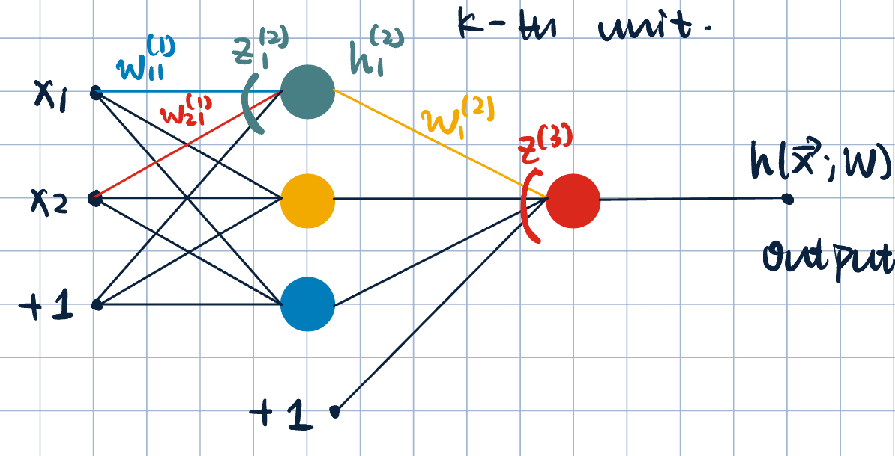
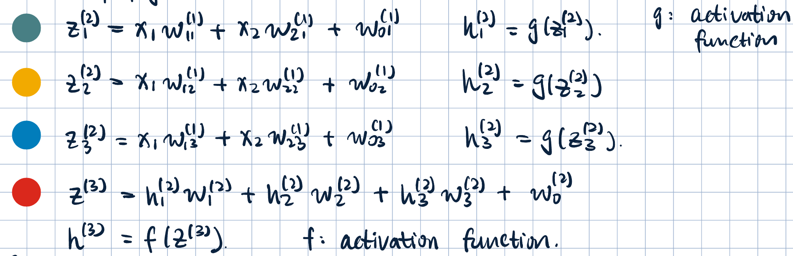
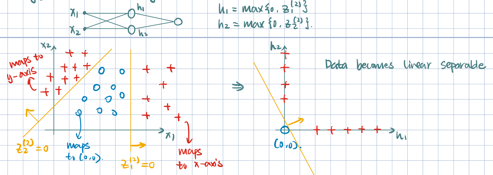

10 Introduction to Neural Networks
Representing Data
- Successful machine learning application relies on successful representation of data. \[ \text{Input}\longrightarrow\text{Feature Representation}\longrightarrow\text{Learning Algorithm} \]
- Machine learning practitioners put a lot of effort into feature engineering:
- How can we get good representations automatically?
- How can we learn good features?
- Methods for non-linear classification:
- Explicit feature mapping \(\phi(\va x)\): \[\hat y=\operatorname{sign}(\va\theta\cdot\phi(\va x)).\]
- Hand-crafted, labor-intensive, could become very high dimensional.
- \(\phi(\va x)\) depends on \(\va x\) alone and is not learned.
- Implicit feature mapping via a kernel: \[\hat y=\operatorname{sign}\qty(\sum_{j=1}^N\alpha_j y^{(j)}K(\va x^{(j)},\va x))=\operatorname{sign}(\va\alpha\cdot\phi(\va x)),\] where \(\phi(\va x)=\mqty[y^{(1)}K(\va x^{(1)},\va x),\dots,y^{(N)}K(\va x^{(N)},\va x)]\).
- \(\phi(\va x)\) depends on \(\va x\) and the training set \(\qty{\va x^{(i)},y^{(i)}}_{i=1}^N\), but is not learned.
- Boosting ensemble: \[\hat y=\operatorname{sign}\qty(\sum_{m=1}^M\alpha_mh(\va x;\va\theta^{(m)}))=\operatorname{sign}(\va\alpha\cdot\phi(\va x)),\] where \(\phi(\va x)=\mqty[h(\va x;\va\theta^{(1)}),\dots,h(\va x;\va\theta^{(M)})]\).
- \(\phi(\va x)\) is learned via a greedy approach in boosting.
- Optimization is performed sequentially choosing one weak classifier at a time.
- Neural networks:
- Jointly Learning
- Model parameters and feature representations are learned at the same time.
- Explicit feature mapping \(\phi(\va x)\): \[\hat y=\operatorname{sign}(\va\theta\cdot\phi(\va x)).\]
Introduction to Neural Networks
- Other names:
- Feedforward neural networks (FNN)
- Multilayer perceptrons (MLP)
- Fully-connected/Dense networks
Definition 1 (Neural Networks) Neural networks are composed of simple computational units called neurons/units.
- \(z=z(\va x;\va w)=w_1x_1+w_2x_2+w_3x_3\), and \(h=g(z)\) is the activation function.
- Example of activation function: sigmoid function: \[h=g(z)=\dfrac{1}{1+e^{-z}}.\]
Neurons are arranged in a network composed of layers. The specific arrangement corresponds to the architecture. - Input layer: The first layer of the network, which receives the input data. - Hidden layers: Intermediate layers between the input and output layers. Each hidden layer consists of multiple neurons that process the input data. - Output layer: The final layer of the network, which produces the output predictions.
Remark 1 (Single-Layer Neural Network). A single-layer neural network is simply logistic regression. \[ \va x=\mqty[x_1\\x_2\\x_3],\quad \va w=\mqty[w_1\\w_2\\w_3],\quad \implies\quad\hat y=h(\va x;\va w)=\dfrac{1}{1+\exp(-\va w\cdot\va x)}. \]
Remark 2 (Offset/Bias Term). We can always include an offset/intercept/bias term by adding a constant input.
\[ z=z(\va x;\va w)=w_0+w_1x_1+w_2x_2+w_3x_3+w_4. \]
- Adding one hidden layer:
- Notation: the weight \(W_{ik}^{(j)}\), where \(j\)-th layer, \(i\)-th input, and \(k\)-th unit. 
- Two-layer network since ther eare two sets of weights.
- Forward propagation: 
- Common activation functions:
- ReLU: \(g(z)=\max\qty{0,z}\).
- Threshold: \(g(z)=\operatorname{sign}(z)\).
- Softmax: \(g(z)=\dfrac{e^z}{\dsst\sum_ke^{z_k}}\) for multiclass classification.
- Sigmoid: \(g(z)=\dfrac{1}{(1+e^{-z})}\).
- Hyperbolic tangent: \(g(z)=\tanh(z)\).
Example 1 (What is neural network doing?)

Training Neural Networks
Gaol: Formulate an optimization problem to find the weifghts. Apply SGD.
Set-up: \(D=\qty{\va x^{(i)},y^{(i)}}_{i=1}^N\), \(\va x\in\R^d\), \(y\in\qty{-1,+1}\).
We want to learn \(\va\theta=\mqty[w_{10}^{(1)},w_{11}^{(1)},\dots,w_{km}^{(L)}]\) parameter of the neural network in order to minimize loss over training examples: \[ J(\va\theta)=\dfrac{1}{N}\sum_{i=1}^N\operatorname{loss}(y^{(i)}\cdot h(\va x^{(i)};\va\theta)), \] where \(y^{(i)}\) is the true label and \(h(\va x^{(i)};\va\theta)\) is the neural network output.
Remark 3 (Choice of Loss Function). \(\operatorname{loss}(\cdot)\) can be any (sub)differentiable loss function. For example, hinge loss.
- Overview of Optimization Procedure: SGD
- Initialize \(\va\theta\) to small random values (to prevent learning the same features).
- Select \(i=\qty{1,\dots,N}\) at random (or mini-batch).
- Update \[\va\theta^{(k+1)}=\va\theta^{(k)}-\eval{\eta_k\grad_{\va\theta}\operatorname{loss}\qty(y^{(i)}\cdot h(\va x^{(i)};\va\theta))}_{\va\theta=\va\theta^{(k)}}.\]
Remark 4 (Number of Parameters/Dimensions). Gradient vector has the same dimensionality as the number of parameters. \[ d'=\sum_{\l=1}^{\text{number of layers}}\qty(\text{number of inputs for layer }\l)\times\qty(\text{number of ouputs for layer }\l). \]
Backpropagation
Simple Single-Layer NN
We consider no activation function: \[h(\va x;\theta)=w_0+\sum_{j=1}^dw_jx_j=z.\]
Consider Hinge loss: \[L=\max\qty{0, 1-yz}.\]
For \(j=1,\dots, d\): \[\pdv{L}{w_j}=\pdv{L}{z}\cdot\pdv{z}{w_j}=-y\cdot\1\qty{L>0}\cdot x_j,\quad\text{Chain Rule: }L(z(w)).\]
The update rule is: if \(\operatorname{loss}(yz)>0\) (equivalent to \(y\cdot h(\va x;\va\theta^{(k)})<1\).), then \(w_j^{(k+1)}=w_j^{(k)}+\eta_kyx_j\).
\(j=0\): \[\pdv{L}{w_0}=\pdv{L}{z}\cdot\pdv{z}{w_0}=-y\cdot\1\qty{L>0}\cdot 1=-y\cdot\1{K>0}.\]
The update rule is if \(\operatorname{loss}(yz)>0\), then \(w_0^{(k+1)}=w_0^{(k)}+\eta_ky\).